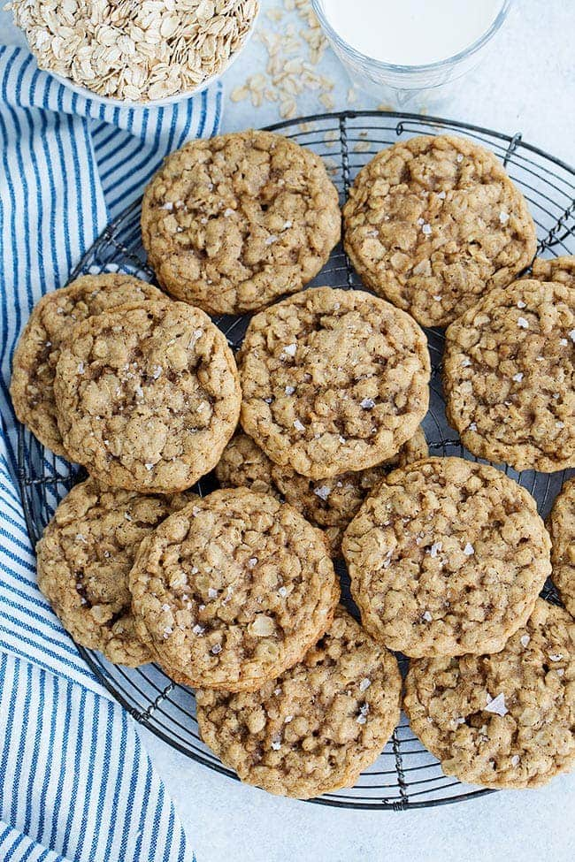

Oatmeal Raisin Cookies

Ingredients
- 1 cup unsalted butter, softened
- 1 cup packed brown sugar
- 1/2 cup granulated sugar
- 2 large eggs
- 1 teaspoon vanilla extract
- 1 1/2 cups all-purpose flour
- 1 teaspoon baking soda
- 1/2 teaspoon salt
- 3 cups old-fashioned oats
- 1 cup raisins
Instructions
- Preheat oven to 350°F (175°C). Line baking sheets with parchment paper.
- In a large mixing bowl, cream together softened butter, brown sugar, and granulated sugar until smooth.
- Beat in eggs, one at a time, then stir in vanilla extract.
- In a separate bowl, combine flour, baking soda, and salt. Gradually add to the creamed mixture and mix well.
- Stir in oats and raisins until evenly distributed.
- Drop dough by rounded tablespoons onto prepared baking sheets.
- Bake for 10 to 12 minutes, or until edges are golden brown.
- Remove from oven and let cool on baking sheets for 5 minutes, then transfer to wire racks to cool completely.
- Enjoy your delicious homemade oatmeal raisin cookies!